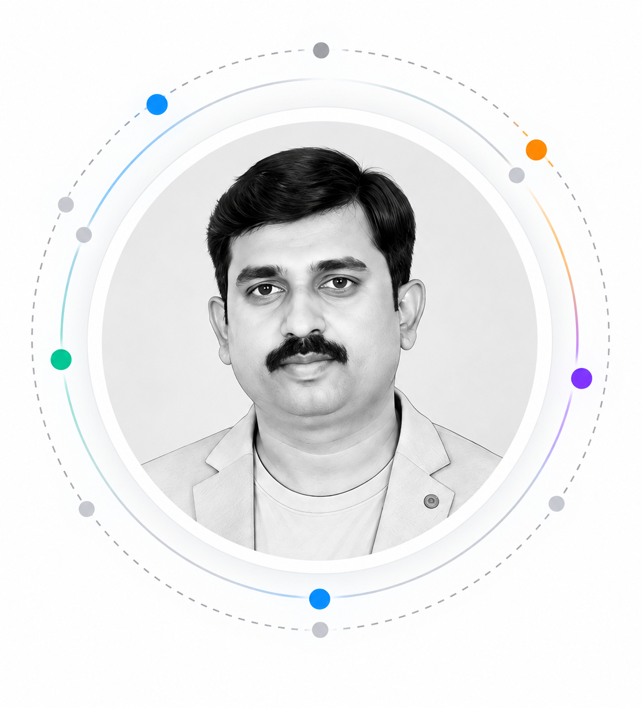
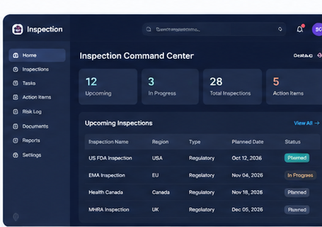
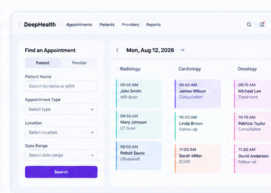
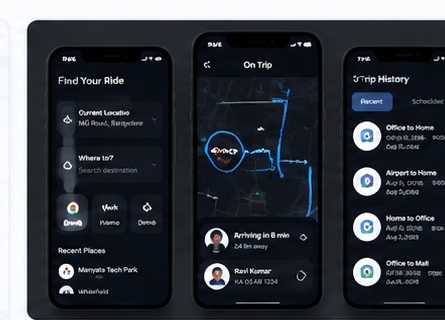
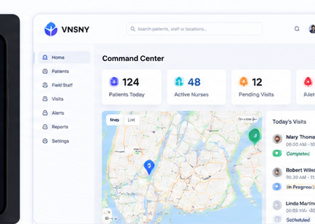

Human-Centered Design
Designing for real people, real needs
I bring 19 years of UX experience across complex products and enterprise ecosystems, combining human-centered design, strategic thinking, design leadership, and emerging AI capabilities to create meaningful impact.
It's what I love to do.

01
Over the years, I've learned that good design is about balancing what people need, what a business can support, and what technology can make possible. As AI reshapes how we interact with products, I'm increasingly interested in designing experiences where technology augments human capabilities, simplifies complexity, and builds trust.
I've built scalable design systems and standards to improve consistency and efficiency, but I believe the bigger impact comes from the people behind the work — giving designers a voice in product decisions, encouraging collaboration, and creating a sense of ownership that helps teams do their best work and ultimately leads to better products and better outcomes.
View resumeDesigning for real people, real needs
Exploring how technology augments human capabilities
Building consistency, scalable and efficient experiences
Connecting user needs, business goals and technology
Mentoring, enabling and growing design teams
Designing accessible and inclusive experiences for everyone
Turning insights into meaningful and usable solutions
Simplifying complex workflows across industries and global teams
02
My design approach has evolved over the years. Traditional UX methodology gives me a strong foundation to understand people, frame problems, explore solutions and validate experiences. With AI, I can now explore more possibilities, synthesize insights faster, and deliver more human-centered, scalable solutions — while keeping people at the center.
A structured, research-driven approach to understand users, solve problems and design effective experiences.
An evolved, iterative approach that leverages AI to augment research, ideation, design and validation — while keeping people at the center.
I use the right mix of traditional UX principles and AI capabilities based on the problem, users and context — keeping human needs, business goals and technology possibilities in balance.
03
A selection of projects across enterprise, healthcare, AI and complex product experiences where I've designed user-centered, scalable and impactful solutions.

Pharma / Life Sciences
Enterprise tool to plan, prepare and manage global inspections.

Healthcare
Simplified and unified scheduling experience for patients and providers.

AI / Mobility
AI-powered mobility platform for smarter and safer commuting.

Healthcare / Home Care
Real-time view of field staff, patient appointments and care delivery.